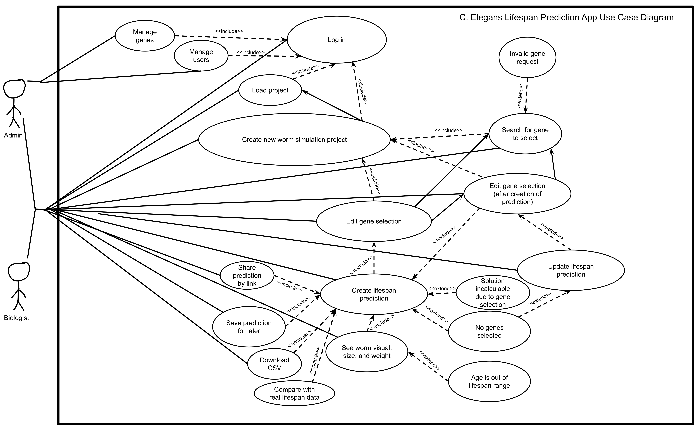
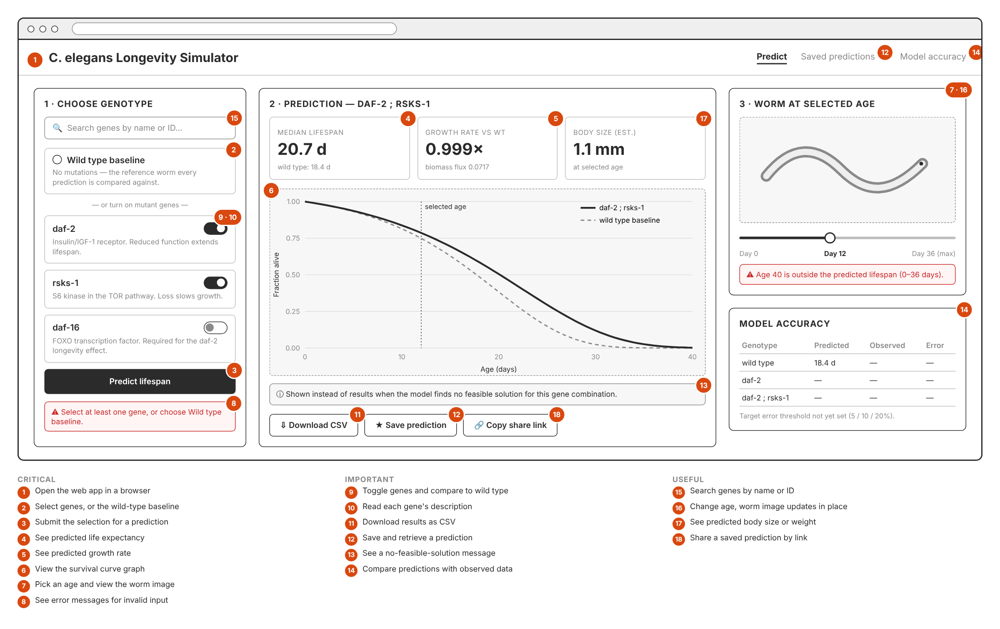
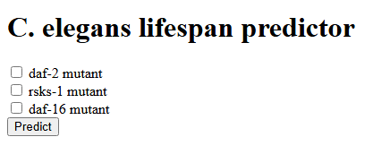
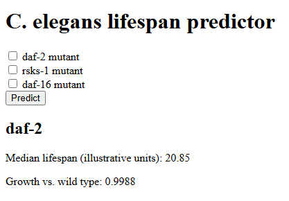
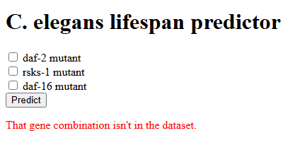

The project is a web tool for researchers and students studying C. elegans longevity. A user selects genes from a curated list and sees a predicted lifespan, growth rate, and a visual of the worm at a chosen age. Predictions are produced by a transcriptomics-constrained flux balance analysis (FBA) pipeline built on the iCEL1314 metabolic model and the GSE52340 microarray dataset. The preliminary scope totals 18 features: 8 critical, 6 important, 4 useful.
The diagram below covers the preliminary-scope features using standard UML use-case notation, with two actors (Biologist, the end user, and Admin, who manages genes and users), <<include>> relationships for mandatory sub-steps (e.g. every prediction-related action includes logging in), and <<extend>> relationships for optional/exceptional paths (e.g. an invalid gene request or an age outside the lifespan range).

This section evaluates alternatives for each major component of the stack and justifies the final selection. All scoring is on a 1 (poor) to 5 (excellent) scale per criterion; the weighted total is ∑ (score/5 × weight), out of 100.
| Criterion | Weight | What it means for this project |
|---|---|---|
| Integration | 25% | Works directly with the Python pipeline, COBRApy, and the CSV results, with no translation layer. |
| Team experience / learning curve | 20% | The team already knows it, or can learn it within a few weeks. |
| Delivery time | 15% | Gets critical features 1–8 working inside the semester. |
| Community support | 15% | Documentation, tutorials, maintained packages, help-forum answers. |
| Scalability | 10% | Handles more genes, more users, and a more complex interface later. |
| Security | 10% | Input validation, escaping, protection against common web attacks, safe storage. |
| Cost | 5% | Free to develop with and cheap or free to host. |
| Criterion (weight) | HTML/CSS/JS + Jinja + Chart.js | Vue 3 | React |
|---|---|---|---|
| Integration (25%) | 5 | 4 | 3 |
| Team experience (20%) | 5 | 3 | 3 |
| Delivery time (15%) | 5 | 4 | 3 |
| Community support (15%) | 4 | 4 | 5 |
| Scalability (10%) | 3 | 4 | 5 |
| Security (10%) | 4 | 4 | 4 |
| Cost (5%) | 5 | 5 | 5 |
| Weighted total | 91 | 77 | 74 |
Choice: HTML, CSS, and JavaScript (ES6+) rendered through Jinja templates, with Chart.js for the survival curve. No JavaScript framework. Flask serves the templates directly, and a small amount of JavaScript calls the REST API so results update without a full page reload. Jinja auto-escapes output, which covers the most common injection risk. React scores higher on scalability and community support and remains the fallback if the interface grows into something like a side-by-side comparison dashboard — the REST API in 4.2 (Backend) keeps that migration open without a backend rewrite. Given the one-semester timeline and the team's existing HTML/CSS/JS experience, the no-framework approach was chosen.
| Criterion (weight) | Python + Flask | Python + FastAPI | Python + Django |
|---|---|---|---|
| Integration (25%) | 5 | 5 | 4 |
| Team experience (20%) | 5 | 4 | 2 |
| Delivery time (15%) | 5 | 4 | 3 |
| Community support (15%) | 5 | 4 | 5 |
| Scalability (10%) | 3 | 4 | 4 |
| Security (10%) | 3 | 4 | 5 |
| Cost (5%) | 5 | 5 | 5 |
| Weighted total | 92 | 86 | 75 |
Choice: Python with Flask, exposing a REST API that returns JSON. The backend must be Python because the prediction engine is COBRApy, a Python-only library. Flask wins on integration and delivery time — a working prototype already imports the fluxworm package directly (see Section 7.3). FastAPI is the closest alternative, with built-in request validation and automatic API docs, and remains an option if validation becomes a burden; its async support matters less here since FBA computation is CPU-bound, not I/O-bound. Django's admin site and ORM are more than this project needs.
API approach: REST over HTTP with JSON bodies was chosen over GraphQL. The planned surface is six fixed, well-understood endpoints (gene list, run/fetch a prediction, survival-curve points, worm image by age, CSV export) that don't need GraphQL's flexible querying, and REST is simpler for the team to test.
| Criterion (weight) | SQLite (relational) | PostgreSQL (relational) | Flat CSV/JSON files (current) |
|---|---|---|---|
| Integration (25%) | 5 | 4 | 5 |
| Team experience (20%) | 4 | 4 | 5 |
| Delivery time (15%) | 5 | 3 | 4 |
| Community support (15%) | 5 | 5 | 3 |
| Scalability (10%) | 3 | 5 | 1 |
| Security (10%) | 3 | 5 | 2 |
| Cost (5%) | 5 | 4 | 5 |
| Weighted total | 88 | 84 | 77 |
Choice: a relational database, SQLite, accessed through SQLAlchemy. The data — genes, genotypes, predictions, survival-curve points, saved runs — has a fixed, linked-by-ID shape that fits relational tables better than a document store, which rules out something like MongoDB. SQLite ships with Python and needs no server, which keeps setup identical across every team machine. SQLAlchemy makes a later move to PostgreSQL mostly a connection-string change, which is planned if the app is hosted for many concurrent users. Flat files (the pipeline's current output format) work for precomputed results but can't safely handle saved predictions or concurrent writers.
| Area | Choice | Alternatives considered | Why |
|---|---|---|---|
| Unit and API tests | pytest + Flask test client | unittest | Already used for the pipeline's 19 unit tests; the Flask test client exercises the API without starting a server. |
| Acceptance tests | pytest-bdd | behave | User stories are already written as Given/When/Then, so each scenario converts to a test almost word for word. |
| End-to-end browser tests | Playwright (Python) | Selenium, Cypress | Tests the real pages in CI; Cypress would require a separate JavaScript test stack. |
| CI/CD | GitHub Actions | GitLab CI, Jenkins | Free for this repository, configured in-repo as YAML, runs on every push and pull request; Jenkins needs a server to maintain. |
| Hosting | AWS EC2 | PythonAnywhere, a university VM | Low-cost Python hosting that deploys from GitHub; Flask's built-in server is development-only. |
| Containers (optional) | Docker | None | Pins the solver and Python versions so the hosted app matches every dev machine. |
| Documentation | Markdown in-repo, GitHub Pages | None | The project primer is already published on GitHub Pages. |
| Component | Final choice |
|---|---|
| Frontend language | HTML5, CSS3, JavaScript (ES6+) |
| Frontend framework | None — Jinja templates, plus Chart.js for graphs |
| Backend language | Python 3.11 |
| Backend framework | Flask, rendering templates and calling the pipeline directly |
| API | REST, JSON over HTTP |
| Database | Relational — SQLite through SQLAlchemy, with PostgreSQL as the scale-up path |
| Modeling engine | fluxworm pipeline (COBRApy + GLPK solver), results precomputed per genotype |
| Testing | pytest, Flask test client, pytest-bdd, Playwright |
| CI/CD | GitHub Actions, deploying to an AWS EC2 instance |
| Supporting tools | Git/GitHub, Docker (optional), GitHub Pages |
The final stack keeps everything in Python except the browser code, which matches the team's existing experience, the already-working pipeline, and a one-semester timeline. It also removes the biggest delivery risk for a project like this: translating prediction logic between languages. Keeping the REST API and SQLAlchemy ORM in place leaves React or PostgreSQL open as later upgrades without a rewrite of the backend logic.
Proposed development environment: Windows 11 (team machines; macOS/Linux supported via launcher.sh), VS Code with Python/Pylance/Jinja extensions, Python 3.11+ in a per-project virtual environment created by launcher.py, local server via flask --app app run --debug at http://127.0.0.1:5000, Chrome/Firefox dev tools, Git with one feature branch per change and peer-reviewed pull requests into main.
The team selected three critical user stories for prototyping, one per member. Each was revised after comparison against an AI-generated version (see Activity_3_UserStoriesandAcceptanceCriteria.md for the full side-by-side comparisons); the revisions below reflect the team's final, agreed wording and are the basis for the story-point estimates in Section 6 and the prototype work in Section 7.
As a user, I want to access the app's web page, select genes, and view a lifespan/growth-rate prediction, so that I can run and read a prediction without any setup beyond a browser.
As a user, I want the model to accurately predict a C. elegans growth rate based on chosen genes, and to toggle genes on/off and compare the result against the wild-type baseline, so that I can see how each gene affects the prediction.
fluxworm pipeline (Section 7.2) already works, so the acceptance criteria were revised to match the real constraint-building logic instead of a simplified on/off model.
As a user in the field of biology, I want to see an image of what a worm with a specific age and gene set would look like, so that I have a visual of the worm at that biological age relative to chronological time.
Estimates use a Fibonacci-like scale (1, 2, 3, 5, 8, 13) sized relative to the simplest critical feature, "open the web app" (1 point). Estimates reflect effort and uncertainty, not just lines of code — a story with a well-understood UI but an uncertain backend dependency scores higher than its UI alone would suggest.
| User story | Points | Rationale |
|---|---|---|
| Story 1 — Web-accessible UI for gene selection and predictions | 5 | Mostly well-understood Flask/Jinja routing and form handling; a minimal version already exists (Section 7.3). Points above the minimum account for input validation, the "no genes selected" and "server unreachable" error paths, and the gene-search follow-on scenario. |
| Story 2 — Gene toggles with growth-rate response | 8 | Backend-heavy: each toggle has to re-run the transcriptomics-constrained FBA pipeline (or look up a precomputed genotype) and surface model infeasibility and no-impact cases correctly. The modeling logic exists in core/, but wiring live toggles to it, instead of a single static form submit, is new integration work with real uncertainty around solver behavior on edge-case gene combinations. |
| Story 3 — Worm visual at a selected biological age | 8 | No visual assets or age-interpolation logic exist yet. Requires producing or selecting images per genotype/age bucket, range validation against the genotype's predicted lifespan, and an in-place update on age change — the most novel, least-prototyped of the three stories. |
| Total (3 stories) | 21 |
The wireframe below lays out the target interface for all 18 preliminary-scope features (numbered callouts match the feature list in Section 2): a gene-selection panel, a prediction panel with the survival-curve graph, and a worm-at-age viewer.

The architecture keeps the prediction logic in Python end to end. The browser talks to a thin Flask layer, which calls the fluxworm pipeline directly rather than through a network hop; the pipeline's precomputed, per-genotype results are read from CSV today, with SQLite/SQLAlchemy planned for saved and shared predictions (Section 4.3).
To familiarize the team with the chosen environment, the Flask prototype in web/app.py was run end to end: it loads the pipeline's precomputed survival_curves_illustrative.csv and growth_comparison.csv, serves the gene-selection form from Story 1, computes a median lifespan and growth-rate figure for the selected genotype (Story 2), and returns a validation error for an unsupported combination. The screenshots below are captured directly from the running prototype, not mockups.


daf-2 genotype: median lifespan and growth rate vs. wild type (Story 2, features 3–5).
The worm-at-age visual (Story 3) is not yet implemented in the running prototype; Section 7.1's wireframe and Section 6's story-point estimate (8 points, the highest of the three) reflect that it is the least mature of the three stories going into Sprint 1.
| Member | Contributions |
|---|---|
| Michael LeBlanc | Built the fluxworm transcriptomics-constrained FBA pipeline (core/: model loading, microarray parsing, constraint building, FBA runner, 19 unit tests); ran the requirements-elicitation interviews (Activity 2); authored the gene-toggle/growth-rate user story and acceptance criteria (Story 2, Activity 3); README updates; assembled this Sprint 0 report. |
| Tyler Bullard | Built and tested the Flask web prototype (web/app.py, templates); authored the development-environment evaluation and final stack justification (Section 4, PreliminaryDevEnvironment.md); designed the low-fidelity wireframe (Figure 2); authored the web-UI user story and acceptance criteria (Story 1, Activity 3); README feature-list formatting. |
| Caleb Walton | Constructed and revised the use case diagram (Figure 1, Section 3); authored the worm-visual user story and acceptance criteria (Story 3, Activity 3), including the AI-comparison revision. |